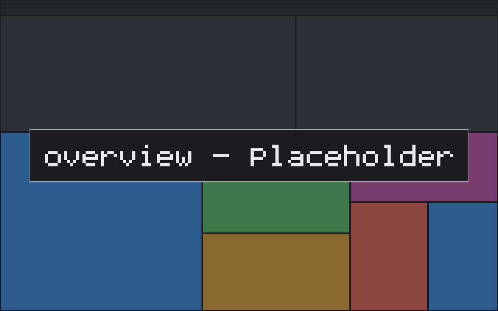
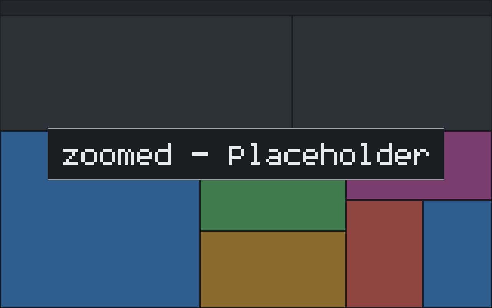
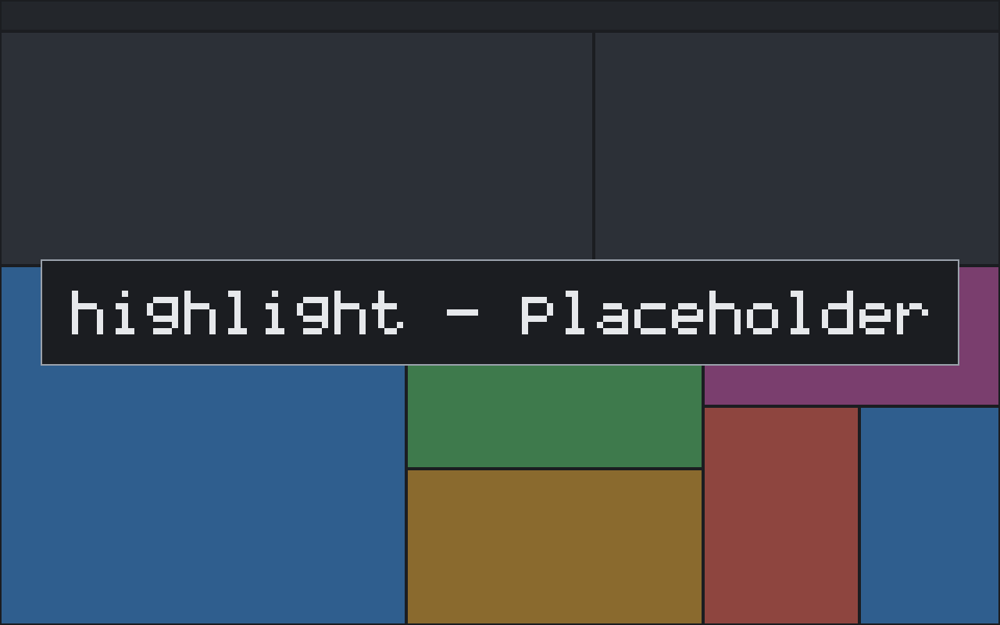

Screenshots



Features
- Fast Scan. Reads the NTFS Master File Table directly instead of walking folders, so a whole Volume is scanned in seconds.
- Cushion Treemap. Every file is a shaded Rectangle sized by how much space it uses; folders read as raised shapes with their sub-folders on top.
- File type Colouring and Highlight. Colour by size rank or by your own Colour groups, then highlight one File type to see every place it sits.
- Zoom root with breadcrumbs. Zoom into any folder, jump back up via the breadcrumb bar, and move Back and Forward through your Zoom history.
- Reveal in Explorer. Double-click a file in the Tree view or the Treemap to open its folder with the file selected.
- Explorer's right-click menu. Right-click a file or folder in the Tree view or the Treemap for Windows Explorer's own context menu; anything you delete there is marked in red until the next Scan.
- Allocated or Logical size. See what files occupy on disk (the default) or the bytes they claim to hold, with one toggle.
- Hard links counted once. A file with several names shows under each folder but its size is only counted once.
Requirements
- Windows 10 or 11, 64-bit (x64).
- NTFS Volumes. Other file systems (FAT32, exFAT, network shares) cannot be scanned.
- Administrator rights. Windows only lets elevated programs read a Volume's Master File Table, which is what makes the Scan fast, so DiskScan asks for them when it starts. DiskScan itself only reads. The right-click menu is Windows Explorer's own, so any action you choose there (open, delete, properties…) is carried out by Windows exactly as it would be in Explorer.
"Windows protected your PC"
The first time you run diskscan.exe, Windows SmartScreen may show this warning. DiskScan is not code-signed (signing certificates cost money every year), and SmartScreen warns about unsigned programs it has not seen often. It does not mean anything harmful was found.
To run it, click More info, check that the app is diskscan.exe, then click Run anyway. Then accept the administrator prompt. If you prefer, compare the zip against SHA256SUMS.txt from the release page first.